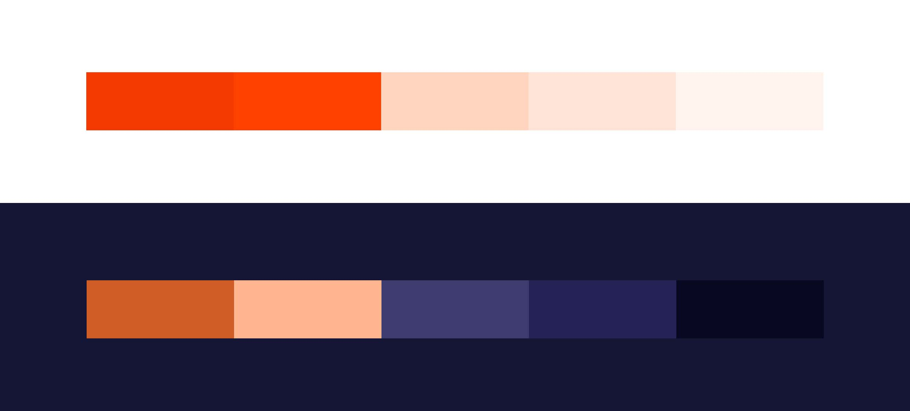
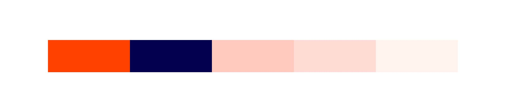
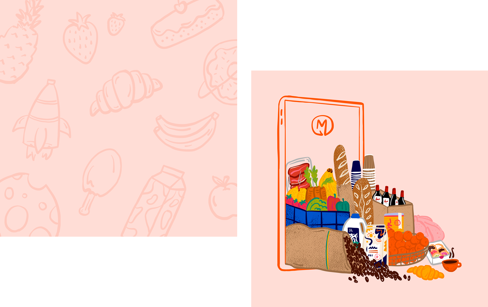
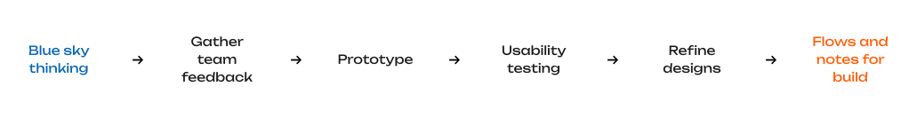

A fresh new brand and design system for Australia’s largest community of suppliers and venues.
Ordermentum is an ordering, payments, and insights platform for the hospitality industry. It is Australia’s largest community of suppliers and venues, with 43,000+ venues, 900+ suppliers, over 2.2 million orders per year and more than $5 billion in processed transactions.
2021 - 2022
Ordermentum
Senior Product Designer
Challenge
Prior to joining Ordermentum, their existing branding and product were lacking visual appeal, consistency, and a solid design system. The colour palette left much to be desired, with the team regularly referencing their “50 shades of grey”. In summary, it was a bit of a mess. I stepped in to provide a UX and visual design skill set and take their brand to the next level.
My primary focus was on the iOS and Android mobile apps for venues. I was also intent on working with every team to uplift all touch points and experiences, including social and marketing, campaigns, website, emails, and printed assets.
Design system
The first step was to audit the existing designs and design system - which was full of old, unused components and not set up effectively. I built a new design system that used Figma’s variants and auto-layout features to our full advantage, making it much easier to maintain and evolve, and create consistency in our designs.
The design system was a collaborative effort between product and tech. As every new component was added, we carefully considered its purpose and place in terms of reuse and flexibility. It was important to respect platform conventions, and by working closely on both iOS and Android I became much more familiar with native components and what works best in different contexts.
It became clear that the team were reaping the benefits of the robust nature of the new design system I had set up, providing every opportunity for rapid iteration. While originally designed for the venue mobile app, by creating every component to be reusable and interchangeable, they easily extended to the supplier and venue web experiences.
“The design system is making it so easy to get a head start on doing something.”
Mitchell Hayes, Product ManagerBrand and marketing
Hospo is a vibrant and fun industry with people and personality at its core, and the Ordermentum brand had to reflect this.
My immediate build on the brand was to introduce a confident, contrasting headline font that complemented the existing Lato font. Lato had originally been used everywhere, and using a serif font for headlines was not achieving the right tone for Ordermentum.
An important consideration for the colour palette was the app’s light and dark mode states. In light mode, the primary brand orange was a powerful colour but was overused and in stark contrast with too much white and grey. I gave more emphasis to the lighter, pinkish shades which helped to modernise, soften and brighten the brand aesthetic.
Dark mode was all black and grey, and the primary brand orange didn’t work here. I transformed dark mode into a strong extension of the brand, a beautiful palette of shades of navy paired with complimentary orange tints.
I then combined colours from our light and dark palettes, with a fun handwritten font Market Pro, to create a playful and bold brand identity in all social and marketing assets.
I introduced a distinct illustration style to Ordermentum, which was key to standing out amongst our competitors and representing the friendly, human aspect of hospo. When illustrating people, the idea was to draw our actual customers rather than just generic characters so that we were truly unique and genuine in how we presented the brand. I emphasised this with extra playful details, like tattoos or a tea towel hanging from an apron pocket, or in the illustrations of produce, I added colourful coffee packaging and specific brands of wine and milk.
Photography was still important to share snaps of our customers across the industry, so I created custom presets for consistent image treatment, and made sure to incorporate photography with illustration so that both types of media worked as part of the brand.
 My idea for a content feed with a mix of audio and blog posts, including both customer and Ordermentum insights (aptly titled The Feed) evolved into Ordermentum’s first official newsletter. After just one issue being sent out, one of our suppliers on the network responded with: “LOVE THIS! Thanks guys, I’m looking forward to the next issue already.”
UX research
A huge part of the product team’s success stemmed from our blue sky thinking. I was given ownership to explore the big picture and visualise what our product could be as the ideal future state, including navigation, content, and key functional tasks.
One example was to redesign part of the mobile app that shapes the core experience for venues and suppliers. Using the initial blue sky thinking designs as a starting point, we had multiple discussions and brainstorming sessions with the wider team to gather feedback and input from all areas of the business.
This helped us shape the next iteration of designs. I created a clickable prototype for usability testing and based on that prototype, I wrote a testing script with 3-4 key tasks which we ran through with several customers – either venue owners or managers who currently use Ordermentum. I found my conversations with customers hugely rewarding, and it gave us the solid ‘why’ behind our design decisions in preparation for build.
Result
A new, exciting energy bloomed within the team with our new look & feel coming to life. Whether it was a new product feature, email, or social post, we were all starting to feel proud of the Ordermentum brand and its distinct personality. We also received positive feedback from multiple customers during usability testing about the visual appeal and presentation of the app.
Creating new assets or product features is no longer adding to the inconsistency. It is now an efficient process based on clear design guidelines and a solid foundation to work from that I have helped to establish.